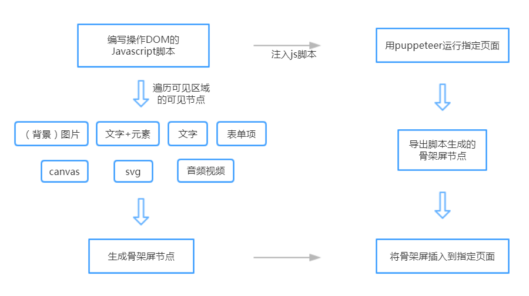

背景
骨架屏是在页面数据尚未加载完成前先给用户展示出页面的大致结构，直到请求数据返回后再显示真正的页面内容；
随着单页应用（SPA）的越来越流行，单页应用的用户体验也越来越得到前端开发者的关注；为了优化用户体验，在数据到达用户之前，往往会在页面上加上loading的效果，而现在，越来越多的场景倾向于使用页面的骨架替代单一的loading效果；

为什么需要自动生成骨架屏？
- 提高效率，节约单独编写骨架屏代码的时间
- 替换原来单一的loading图片效果
- 可以优化用户体验，在页面数据尚未加载完成前
先给用户展示出页面的大致结构，配合动画效果，
给用户一种平滑切换的感觉
常见的方案
- 手动编写骨架屏代码
- 通过预渲染手动书写的代码生成相应的骨架屏
比如：vue-skeleton-webpack-plugin - 饿了么内部的生成骨架页面的工具
page-skeleton-webpack-plugin - ...
- 前两者的前提都是需要开发者自己编写骨架屏代码
- 饿了么的做的比较强大了，还有UI界面专门调整骨架屏
- 对于复杂的页面也会有不尽如人意的地方
- 生成的骨架屏节点是基于页面本身的结构和CSS，存在嵌套比较深的情况，体积不会太小
- 只支持history模式
为什么我们也自己开发一个骨架屏生成工具？
因为，我们不一样！
我们的方案
用纯DOM的方式结合Puppeteer自动生成网页骨架屏
编写操作DOM的Javascript脚本
遍历可见区域可见的DOM节点
包括：非隐藏元素、宽高大于0的元素、非透明元素、内容不是空格的元素、位于浏览窗口可见区域内的元素针对（背景）图片、文字、表单项、音频视频等区域，算出其所占区域的宽、高、距离视口的绝对距离等信息
- 对于符合生成条件的区域，一视同仁，生成相应区域的颜色块
- “一视同仁”即对于符合条件的区域，不区分具体元素，不用考虑结构层级，不考虑样式，统一生成div的颜色块
编写操作DOM的Javascript脚本
- 该脚本的运行环境决定了获取到的元素尺寸与相关距离单位不可控，可能需要做转换，比如用的rem、em、vh等；我们采用比较简单的方式，不取style的尺寸相关的值，而是通过getBoundingClientRect获取宽、高、距离视口距离的绝对值，与当前设备的宽高，计算出相应的百分比作为颜色块的单位，这样来适配不同设备
- 对于页面结构比较复杂或者大图片比较多的页面，会出现不尽如人意的地方，我们通过includeElement(node, draw)和init两个钩子函数来支持自定义的微调
- 以上就能够直接跑在浏览器生成骨架屏代码了
在浏览器内运行，手动添加到应用页面
const createSkeletonHTML = require('DrawPageStructure/evalDOM')
createSkeletonHTML({
// ...
background: 'red',
animation: 'opacity 1s linear infinite;'
}).then(skeletonHTML => {
console.log(skeletonHTML)
}).catch(e => {
console.error(e)
})
- 直接在浏览器端运行，在控制台打印当前页面骨架屏节点，复制添加到应用页面
- 该方式不够自动化，我们该让骨架屏自动生成并添加到应用页面
Puppeteer
Puppeteer是谷歌官方出品的一个可以控制headless Chrome的Node库。
可以通过Puppeteer的提供的api直接控制Chrome模拟大部分用户操作来
进行UI Test或者作为爬虫访问页面来收集数据。
使用Puppeteer的小例子
const puppeteer = require('puppeteer');
(async () => {
// 获取一个浏览器实例
const browser = await puppeteer.launch();
const page = await browser.newPage();
// 打开一个页面，waitUntil对做爬虫时爬取单页应用比较好用
await page.goto('https://jd.com', {waitUntil: 'networkidle2'});
await page.screenshot({path: 'jd.png'}); // 网页截图
await page.pdf({path: 'jd.pdf', format: 'A4'}); // 生成PDF
await browser.close();
})();
就是这么简洁而强大！
Puppeteer提供运行环境和导出方式
- 使用puppeteer运行需要生成骨架屏的页面
- 将之前编写的Javascript脚本通过puppeteer提前注入到该页面，
这样即可运行该脚本，并生成骨架屏所需的DOM节点 - 将自动生成的骨架屏DOM片段插入到应用页面的入口节点
const evalDOM = require('../evalDOM');
await page.goto(url, {waitUntil: 'networkidle0'});
const skeletonHTML = await page.evaluate.call(page, evalDOM, ...args);
小结
- 核心在于DOM操作，puppeteer仅提供运行环境和导出方式
- 只要能访问的页面都能生成，history与hash模式无限制
- 不受项目和框架的限制，vue和react等项目零修改即可复用
- 生成色块的单位为百分比，不同设备自适应
- 不需要css-tree来提取样式，不依赖页面本身的布局结构，生成扁平的DOM节点体积特别小
- 支持自定义生成方式与导出方式
- 还有很多细节优化中，多路由支持也在规划中
- 我们的目标是：简单、灵活、可控
- 欢迎感兴趣的小伙伴一起加入！ http://git.jd.com/hufeng10/DrawPageStructure.git